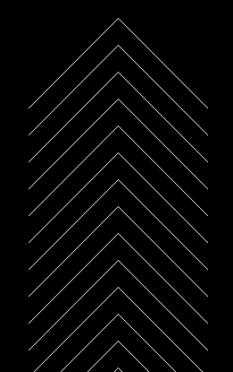
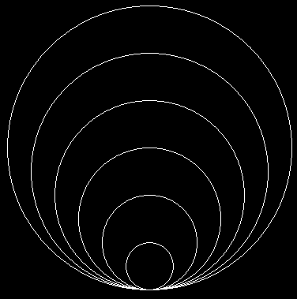

Выполните работу либо в Pixel либо в онлайн-платформе Khan Academy
--------------I вариант------------------
- При помощи любого цикла постройте фигуру

- Ввести двумерный массив из n строк и m столбцов. Заменить все отрицательные числа на нули. Вывести массив после замен.
--------------II вариант------------------
- При помощи любого цикла постройте фигуру

- Ввести двумерный массив из n строк и m столбцов. Заменить все нечетные числа на -1. Вывести массив после замен.
--------------III вариант------------------
- При помощи любого цикла постройте фигуру

- Ввести двумерный массив из n строк и m столбцов. Подсчитать кол-во положительных чисел в нем. Вывести это кол-во.
--------------IV вариант------------------
- При помощи любого цикла постройте фигуру 
- Ввести двумерный массив из n строк и m столбцов. Заменить все положительные числа на нули. Вывести массив после замен.
--------------V вариант------------------
- При помощи любого цикла постройте фигуру 
- Ввести двумерный массив из n строк и m столбцов. Подсчитать кол-во ненулевых чисел в нем. Вывести это кол-во.
--------------VI вариант------------------
- При помощи любого цикла постройте фигуру

--------------VII вариант------------------
- При помощи любого цикла постройте фигуру

- Ввести двумерный массив из n строк и m столбцов. Подсчитать кол-во отрицательных чисел в нем. Вывести это кол-во.
--------------VIII вариант------------------
- При помощи любого цикла постройте фигуру
- Ввести двумерный массив из n строк и m столбцов. Заменить все нули на единицы. Вывести массив после замен.
--------------IX вариант------------------
- При помощи любого цикла постройте фигуру
- Ввести двумерный массив из n строк и m столбцов. Заменить все четные числа на нули. Вывести массив после замен.
--------------X вариант------------------
- При помощи любого цикла постройте фигуру
- Ввести двумерный массив из n строк и m столбцов. Подсчитать кол-во нулевых чисел в нем. Вывести это кол-во.
--------------XI вариант------------------
- При помощи любого цикла постройте фигуру
- Ввести двумерный массив из n строк и m столбцов. Заменить все единицы на нули. Вывести массив после замен.
--------------XII вариант------------------
- При помощи любого цикла постройте фигуру
- Ввести двумерный массив из n строк и m столбцов. Заменить все кратные 3 числа на -1. Вывести массив после замен.